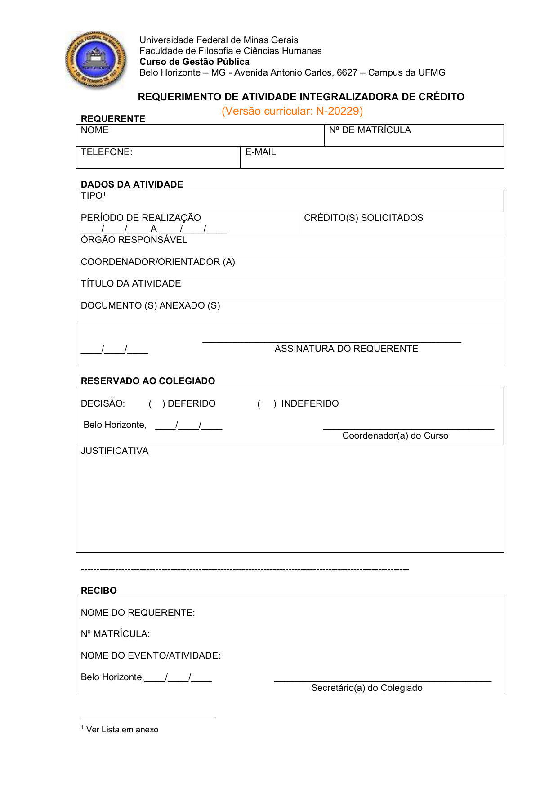

Extensão & Atividades Complementares (AAC)
Regulamento oficial, curricularização da extensão (300h), modalidades de AAC e validação no Colegiado
Normas Oficiais • Capítulos IV e V 300h Extensão Obrigatória Até 300h AAC (Art. 15)
EXTENSÃO UNIVERSITÁRIA E HORAS COMPLEMENTARES
A formação em Gestão Pública na UFMG integra extensão comunitária obrigatória e enriquecimento acadêmico complementar. É fundamental compreender que Formação em Extensão e Atividades Acadêmicas Complementares (AAC) são exigências distintas previstas no Regulamento e no Projeto Pedagógico do Curso.
Quadro Geral de Cargas Horárias
300 HORAS
Formação em Extensão Obrigatória
10% da carga total do curso (Res. CEPE nº 10/2019)
ATÉ 300 HORAS
Atividades Complementares (AAC)
Integralizáveis como optativas (Art. 15 do Regulamento)
1 CRÉDITO = 15H
Parâmetro Oficial da UFMG
Todas as cargas são convertidas nesta proporção
Calculadora & Simulador Interativo de Horas
Use os botões - e + (em blocos de 15h = 1 crédito) para simular suas horas já realizadas ou planejadas. A calculadora respeita automaticamente o teto máximo regimental de cada categoria e salva seu rascunho neste navegador:
SIMULADOR DE INTEGRALIZAÇÃO: EXTENSÃO (300H) + AAC (ATÉ 300H)
1. Formação em Extensão (Meta: 300h)
0h / 300h (0 cr)Exigência obrigatória para colação de grau (20 créditos = 300h):
- Aprovação formal na disciplina prática DCP 195 no 7º período;
- Desenvolvimento de diagnósticos de gestão e matrizes aplicadas a órgãos parceiros;
- Integralização direta de 90h de extensão no SIGA pela nota final.
- Não é passível de dispensa por estágio supervisionado ou vivência profissional;
- Disciplinas teóricas comuns de outros departamentos sem componente extensionista;
- Reprovações exigem nova matrícula no semestre seguinte.
- Aprovação formal na disciplina prática DCP 196 no 8º período;
- Execução do plano de intervenção governamental elaborado no ciclo A;
- Integralização direta de mais 90h de extensão no SIGA.
- Não pode ser cursada sem ter concluído o Laboratório A (requisito pedagógico);
- Atividades de TCC ou pesquisa bibliográfica não contam como Laboratório B;
- Não permite aproveitamento retroativo de empregos anteriores.
- Atuação efetiva em projetos de consultoria técnica em Gestão Pública;
- Cargos de diretoria executiva, gerência e atuação como trainee na ATLAS Jr.;
- Declaração emitida pela Diretoria-Executiva da Empresa Júnior com discriminação de horas.
- Participação em processos seletivos sem ingresso formal ou desistência no treinamento;
- Horas que ultrapassem o teto de 90h (6 créditos) fixado no regulamento;
- Atividades puramente festivas ou comissões de formatura.
- Participação como bolsista ou voluntário em projetos registrados no SIEX/PROEX;
- Certificado formal emitido pela Pró-Reitoria de Extensão (PROEX/UFMG);
- Projetos interdepartamentais que tenham interface com o setor público ou movimentos sociais.
- Ações de extensão sem registro oficial prévio no sistema SIEX;
- Iniciação Científica (pertence à AAC Modalidade V, não à Extensão PROEX);
- Declarações informais de docentes sem chancela da PROEX.
- Participação em comissão organizadora ou comitê executivo de congressos da área;
- Atuação como moderador, debatedor ou coordenador de mesa-redonda ou grupo de trabalho (GT);
- Certificado formal emitido pela comissão do evento atestando o papel exercido.
- Participar apenas sentado na plateia como ouvinte (isto é AAC Modalidade III);
- Organização de calouradas, churrascos ou eventos sem caráter técnico-científico;
- Apresentação de trabalho (isto é Trabalho em Anais / Modalidade VII).
- Cursos de extensão e oficinas em outras Instituições Públicas de Ensino Superior (IES);
- Cursos certificados por Escolas de Governo reconhecidas (ENAP, Fundação João Pinheiro, ILB, etc.);
- Conteúdo com estrita aderência ao campo de Gestão e Políticas Públicas.
- Cursos livres de plataformas comerciais privadas (Udemy, Coursera etc.) sem convalidação pública;
- Cursos que apenas reproduzam matérias obrigatórias já constantes no percurso;
- Cursos sem prova de carga horária, ementa oficial e autenticação digital.
2. Horas Complementares AAC (Teto: 300h)
0h / 300h (0 cr)Abatem créditos optativos respeitando os limites do Art. 15:
- Pesquisas em outras IES públicas ou institutos estatais reconhecidos (IPEA, FJP, etc.);
- Plano de trabalho acadêmico supervisionado por pesquisador externo qualificado;
- Relatório final com parecer formal avaliativo assinado pelo orientador.
- Pesquisas desenvolvidas internamente na UFMG (pertencem à Modalidade V);
- Atividades sem comprovação acadêmica ou sem relatório avaliativo de desempenho;
- Horas que ultrapassem o teto de 75h (5 créditos).
- Monitoria formal (bolsista ou voluntária) em disciplinas vinculadas ao curso de Gestão Pública;
- Disciplinas de Ciência Política (DCP), Sociologia (SOA), Economia (FACE) ou Estatística (ICEx);
- Relatório final com termo de encerramento assinado junto ao docente responsável da disciplina.
- Aulas particulares informais ou cursinhos externos;
- Monitoria exercida sem processo seletivo ou sem cadastro no departamento da UFMG;
- Carga horária além do limite de 45h (3 créditos).
- Participação como ouvinte em congressos, seminários, conferências e semanas acadêmicas;
- Eventos promovidos por universidades, associações científicas (ex.: ABCP, ENEAP) ou órgãos públicos;
- Certificados com carga horária expressa (converte 1 crédito a cada 15h comprovadas).
- Certificados protocolados após 120 dias corridos do evento são indeferidos! (Art. 15, § 4º);
- Certificados sem indicação explícita da carga horária cumprida;
- Eventos puramente corporativos, comerciais ou sem relação com Gestão Pública.
- Participação regular em grupos de estudo cadastrados na UFMG sob tutoria docente;
- Pesquisa bibliográfica de aprofundamento teórico orientada por professor da área;
- Apresentação de texto científico original avaliado pelo orientador docente.
- Grupos de estudo autônomos sem chancela docente oficial no departamento;
- Reaproveitamento de trabalhos escolares de disciplinas regulares ou do TCC;
- Trabalhos sem parecer formal avaliativo do orientador.
- Atuação como bolsista ou voluntário registrado na PRPq/UFMG (PIBIC, PIBITI, etc.);
- Pesquisa vinculada a núcleos do DCP (ex.: Rede Femjusp, PUBLICUS, INCT/IDDC, MARGEM, CEL) ou da FAFICH;
- Relatório final atestado pelo docente orientador no DCP/UFMG.
- Pesquisas sem registro oficial no sistema da Pró-Reitoria de Pesquisa (PRPq);
- Atividades meramente operacionais sem plano metodológico de investigação científica;
- Pesquisas executadas fora da UFMG (pertencem à Modalidade I).
- Para Anais (até 30h / 2 cr): Apresentação de pôster ou comunicação oral em evento científico (ex.: Semana do Conhecimento UFMG, ENEAP, EnANPAD, ABCP) com resumo publicado nos anais;
- Para Periódico (até 60h / 4 cr): Artigo completo publicado ou carta oficial de aceite definitivo em revista indexada com Qualis/CAPES reconhecido;
- Comprovante formal de apresentação ou exemplar do artigo com ISSN.
- Assistir como ouvinte não conta como Anais (pertence à Modalidade III - Eventos I);
- Certificados de Anais entregues após 120 dias corridos do evento são indeferidos! (Art. 15, § 4º, VII);
- Trabalhos avaliativos internos de disciplinas sem apresentação em congresso;
- Textos em blogs, redes sociais, cartas de opinião ou veículos sem corpo editorial científico.
- Estágio não-obrigatório em órgãos públicos (prefeituras, secretarias estaduais, ministérios, tribunais) ou ONGs do campo de públicas;
- Termo de Compromisso de Estágio (TCE) regularizado e relatório final assinado pelo supervisor do órgão;
- Atuação prática em processos de gestão, análise orçamentária ou políticas públicas.
- Horas do Estágio Curricular Obrigatório não podem ser duplicadas como AAC! (pertencem a DCP 046);
- Estágios em empresas privadas comerciais sem interface governamental comprovada;
- Funções operacionais sem relação com a formação em Gestão Pública;
- Carga horária excedente ao teto de 60h (4 créditos).
Todas as modalidades de Extensão e as 9 categorias de AAC com seus prazos regimentais constam no Capítulo IV do Regulamento (Art. 13 a 17). Baixar Regulamento do Curso (PDF • 2 MB)
Regulamento Detalhado por Modalidade
1. Formação em Extensão Obrigatória (300h)
Exigência obrigatória para colação de grau que integra a universidade à sociedade por meio de consultorias públicas, intervenções e programas comunitários:
- Disciplinas de Laboratório de Extensão (DCP 195 e 196): 90 horas cada (total de até 180h / 12 créditos) em consultoria governamental e projetos aplicados no 7º e 8º períodos.
- ATLAS Consultoria Jr. (antiga Equalitas): Atividades e projetos de consultoria desenvolvidos na empresa júnior de Gestão Pública contam como Atividades Interinstitucionais de Extensão (até 90h / 6 créditos).
- Projetos e Programas PROEX / SIEX: Atuação bolsista ou voluntária em programas com registro ativo no Sistema de Informação da Extensão da UFMG (até 90h / 6 créditos).
- Organização de Eventos (Eventos II): Atuação em comissão organizadora ou mediação de mesas-redondas da área (até 60h / 4 créditos).
- Cursos Interinstitucionais de Extensão: Cursos e oficinas em outras IES públicas ou Escolas de Governo reconhecidas (ENAP, FJP, etc., até 120h / 8 créditos).
2. Horas Complementares AAC (Até 300h)
Atividades extracurriculares facultativas que abatem créditos do grupo de optativas (cada 15h = 1 crédito). Fique atento aos limites e comprovações:
| Modalidade Oficial | Teto | Comprovação Exigida |
|---|---|---|
| I. Pesquisa Interinstitucional | 75h | Relatório assinado com orientador de outra IES/órgão. |
| II. Monitoria Acadêmica | 45h | Relatório final assinado com o docente titular na UFMG. |
| III. Eventos I (Ouvinte) | 60h | Prazo: 120 dias corridos! Certificado com carga horária expressa. |
| IV. Grupos de Estudo | 30h | Participação regular com parecer docente. |
| V. Iniciação Científica (UFMG) | 90h | PIBIC/voluntário registrado na PRPq com relatório. |
| VI. Pesquisa Bibliográfica | 30h | Texto científico orientado (distinto do TCC). |
| VII. Trabalho em Anais | 30h | Prazo: 120 dias corridos! Apresentação oral/pôster em congresso. |
| VIII. Artigo em Periódico | 60h | Artigo publicado em revista Qualis/CAPES. |
| IX. Vivência Profissional | 60h | Estágio não obrigatório em órgão público ou ONG. |
Guia Prático: Como Preencher e Submeter o Requerimento de AAC
O que você precisa saber imediatamente: Nunca acumule certificados de eventos, seminários ou anais de congressos para o final do curso! O Colegiado de Gestão Pública indefere sumariamente qualquer certificado protocolado fora do prazo.
Respaldo Legal e Regra de Contagem: Conforme o Art. 15, § 4º, incisos III e VII do Regulamento do Curso, certificados de participação como ouvinte (Modalidade III) e apresentação de trabalhos em anais (Modalidade VII) devem ser protocolados no prazo decadencial fatal de até 120 dias corridos. Para eventos ocorridos durante as férias ou recesso acadêmico, o Colegiado adota a interpretação benéfica de que a contagem do prazo inicia-se a partir do primeiro dia letivo do semestre regular subsequente à emissão do documento.
Como Preencher o Requerimento de AAC (Versão N-20229)
Preencha um formulário para cada atividade extracurricular que desejar integralizar na sua carga horária de optativas (Art. 15). Confira os campos indispensáveis e as etapas corretas de tramitação:

1. Identificação do(a) Estudante
Preencha seu nome completo, Nº de Matrícula, telefone de contato e e-mail institucional @ufmg.br. Certifique-se de que sua versão curricular é a N-20229.
2. Classificação da Atividade & Créditos
Indique o Tipo (Modalidades I a IX), período de realização (início e término), órgão ou entidade promotora e a quantidade exata de créditos solicitados (1 crédito = 15h comprovadas).
3. Envio para Análise da Coordenação
Após preencher e assinar o formulário, anexe os certificados comprobatórios (com link/código de autenticidade eletrônica) e envie para o e-mail da Coordenação: coordgestaopublica@gmail.com solicitando a análise e assinatura da Coordenadora (Profª Isabele Batista Mitozo).
4. Impressão e Protocolo na Secretaria
Com o documento assinado e deferido pela Coordenação, imprima o requerimento homologado e leve pessoalmente à Secretaria do Curso (Sala F-2039) para protocolar a validação e lançamento definitivo no histórico escolar do SIGA.
Programa de Imersão no Campo de Públicas
Criado no segundo semestre de 2017 pelo Colegiado de Coordenação Didática, o Programa de Imersão no Campo de Públicas congrega ações de ensino, pesquisa e extensão universitária. Seu objetivo é integrar a formação teórica de sala de aula à prática profissional real, prestando consultoria e assessoramento direto a órgãos públicos municipais, estaduais e organizações da sociedade civil.
O programa estrutura-se em 3 eixos fundamentais:
Laboratórios A e B
Operacionalizado nas disciplinas de Laboratório de Gestão e Políticas Públicas A e B (7º e 8º períodos). Equipes de alunos desenvolvem produtos sob demanda de órgãos públicos parceiros:
- Diagnósticos de gestão ou situacionais;
- Projetos de intervenção governamental;
- Análises de políticas públicas e matrizes orçamentárias;
- Otimização de processos e gestão de pessoas.
Gestão Além do Horizonte
Projeto de assessoria técnica a gestores de prefeituras municipais de Minas Gerais, conduzido por discentes sob supervisão docente do DCP:
- Elaboração de planos municipais em áreas temáticas prioritárias;
- Captação de recursos federais e estaduais para municípios;
- Capacitação de equipes administrativas locais.
Práticas Avançadas
Projetos de extensão contínuos com duração superior a um semestre, registrados oficialmente no Sistema de Informação da Extensão (SIEX):
- Registro SIEX: Projetos nº 109111 e nº 109109;
- Instagram Oficial: @programadeimersao ↗;
- Participação remunerada com bolsas de extensão ou voluntária válida para a carga horária de 300h.
Iniciação Científica & Núcleos de Pesquisa: Validação de até 90h de AAC
A atuação em projetos de investigação científica nos centros e laboratórios vinculados ao Departamento de Ciência Política (DCP) e à FAFICH/UFMG é uma das formas mais formativas e qualificadas de integralizar créditos de Atividades Acadêmicas Complementares (AAC).
Conforme a Modalidade V do Art. 15 do Regulamento do Curso, a participação regular como bolsista de pesquisa (PIBIC/CNPq, PIBITI, FAPEMIG, PRPq) ou pesquisador voluntário formalmente registrado permite convalidar até 90 horas (6 créditos) para a sua integralização curricular.
Do Laboratório ao SIGA: Como Comprovar e Protocolar Horas de IC
Estar cadastrado no plano de trabalho do docente na PRPq/UFMG, como bolsista remunerado ou voluntário registrado (mínimo de 1 semestre letivo).
Solicitar ao orientador a Declaração de Iniciação Científica com timbre UFMG, vigência e carga horária expressa, acompanhada de um breve relatório de atividades.
Preencher o formulário oficial (Modalidade V), enviar para coordgestaopublica@gmail.com e protocolar assinado na Secretaria (F-2039) em até 120 dias.
Políticas & Burocracia
Políticas sociais, SUS, governo digital e sociologia da burocracia estatal.
- PUBLICUS (SUS & Políticas Sociais)
- CEPPI (Governo Digital & Internet)
- NESTH (Trabalho & Servidor Público)
Poder, Justiça & Segurança
Processo legislativo, segurança pública, sistema penal e relações internacionais descentralizadas.
- CEL (Poder Legislativo & Orçamento)
- Rede Femjusp (Violência & Prisões)
- MARGEM & OJB (Justiça & Controle)
- RIPPERP (Paradiplomacia & Redes)
Participação & Direitos
Orçamento participativo, conselhos gestores, equidade de gênero e pesquisas eleitorais/amostrais.
- PRODEP (Democracia Participativa)
- INCT / IDDC (Rede Democracia CNPq)
- NEPEM (Gênero & Equidade)
- CECOMP (Comportamento Cívico)
Quer conhecer a fundo os projetos, docentes e a interface de cada grupo com a Gestão Pública?
Consulte o catálogo oficial completo com os 11 núcleos do DCP, histórico de publicações, redes sociais e linhas de pesquisa ativas.
Principais Dúvidas sobre Horas e Atividades
Dicas Práticas dos Veteranos
- Posso usar o mesmo evento para Extensão e AAC?
Não. Conforme o regulamento, uma mesma atividade não pode ser duplicada entre categorias. O discente escolhe se a atividade preencherá o grupo de Extensão (caso envolva comissão/debatedor) ou de AAC (caso ouvinte). - Atividades anteriores à matrícula na UFMG são válidas?
Não. O Art. 15, § 1º determina que as atividades devem ser realizadas estritamente durante o período em que o discente estiver matriculado no curso de Gestão Pública. - E se minha solicitação for indeferida?
Conforme o Art. 16, a atividade indeferida não pode ser reapresentada na mesma modalidade, mas cabe recurso administrativo fundamentado ao Colegiado de Coordenação Didática.